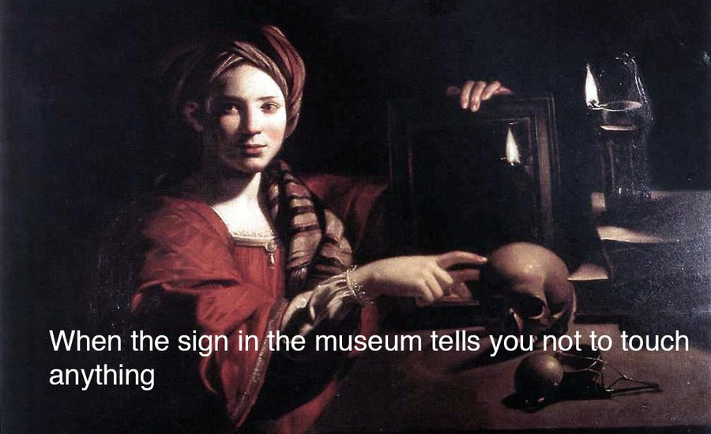
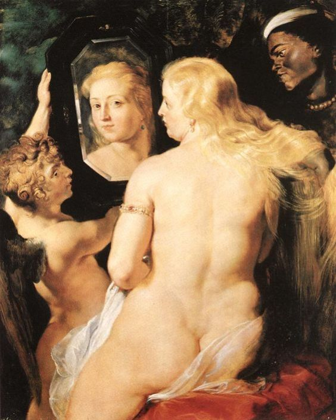
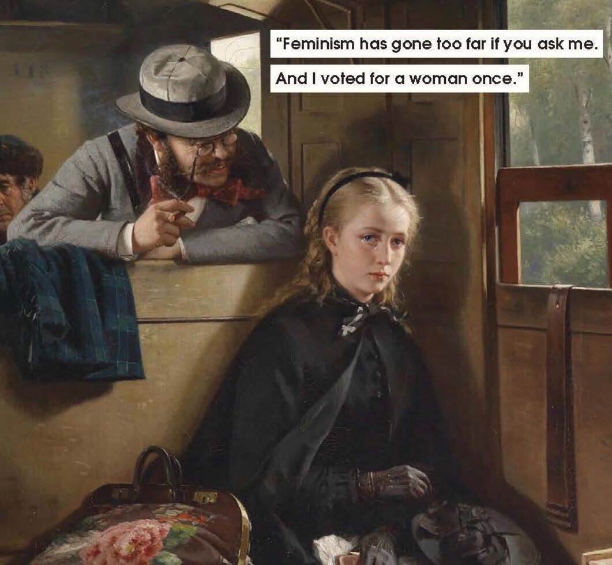

Reviewing Ways of Seeing by John Berger
The camera and Paintings
The Camera has created a revolution in the form of Reproduction
Reproduction has allowed paintings to be used to make different arguments and ppoints
Take for example these oil paintings that have been reused as what we know today as "memes"

The ability to reproduce paintings has changed the value of art
The value of art is now determined by how genuine and
unique the piece of art is.
The Nude and Nakedness
The second episode of the series Ways of Seeing explores how Paintings from the Renaissance Period portray women
and what that tells us about woman's image of their own selves
Women are always naked in those paintings while men are always dressed.
What does that tell us?
This brings us to another question would we say the women are naked or nude in those paintings?
and how are those two terms diffrent?

A nude is different from being naked in the sense that being naked is that in nakedness one is recingnized as themself, but being nude is being recongized as oneself.
In nudes women we portrayed in a way that appeals to the owner of the painting.
Their nakedness was not a statmenet of their sexuality, but as a sign of submission
and being avalaiable for the owner of the painting.
Thus, nude paintings
were lways a statment for a man's sexuality.
The women in these paintings were portrayed as objects as something a man owns.
An object that has to look in a certain way to please the looker. ›
Women are pressured to look attractive for women and then judged for caring too much about how they look.
Press the picture below to read the article 'Female Nudity in Renaissance Art: Feminist Ethical Considerations'
